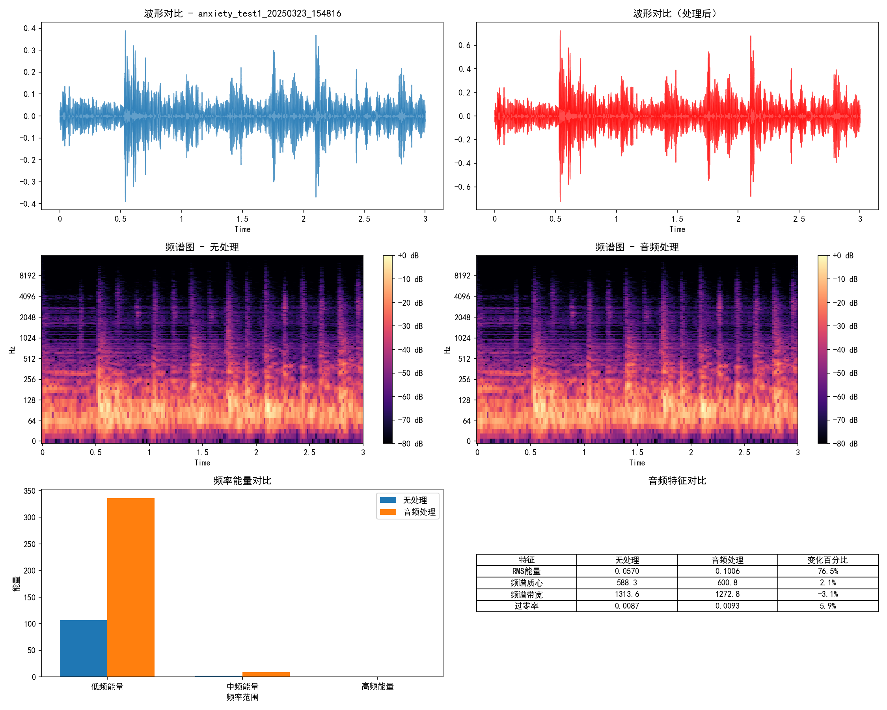

音频处理效果分析报告
本报告对比分析了原始音频和经过音频处理模块处理后的音频，展示了处理前后的差异。
整体分析结果
上图展示了音频处理对各个音频特征的平均影响（百分比变化）。
各案例详细分析
案例: anxiety_test1_20250323_154816
详细分析

案例: anxiety_test2_20250323_154849
详细分析
案例: calm_test1_20250323_155303
详细分析
案例: calm_test2_20250323_155342
详细分析
案例: depression_test1_20250323_154922
详细分析
案例: depression_test2_20250323_154955
详细分析
案例: distraction_test1_20250323_155418
详细分析
案例: distraction_test2_20250323_155452
详细分析
案例: insomnia_test1_20250323_155029
详细分析
案例: insomnia_test2_20250323_155105
详细分析
案例: pain_test1_20250323_155528
详细分析
案例: pain_test2_20250323_155604
详细分析
案例: ptsd_test1_20250323_155641
详细分析
案例: ptsd_test2_20250323_155717
详细分析
案例: stress_test1_20250323_155144
详细分析
案例: stress_test2_20250323_155222
详细分析